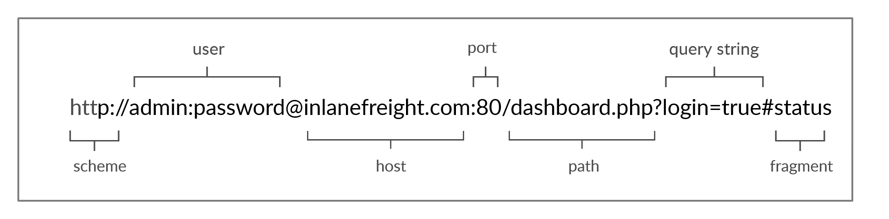

Web Requests
cURL cheat sheet
| Command | Description |
|---|---|
curl -h |
cURL help menu |
curl inlanefreight.com |
Basic GET request |
curl -s -O inlanefreight.com/index.html |
Download file |
curl -k https://inlanefreight.com |
Skip HTTPS (SSL) certificate validation |
curl inlanefreight.com -v |
Print full HTTP request/response details |
curl -I https://www.inlanefreight.com |
Send HEAD request (only prints response headers) |
curl -i https://www.inlanefreight.com |
Print response headers and response body |
curl https://www.inlanefreight.com -A 'Mozilla/5.0' |
Set User-Agent header |
curl -u admin:admin http://<SERVER_IP>:<PORT>/ |
Set HTTP basic authorization credentials |
curl http://admin:admin@<SERVER_IP>:<PORT>/ |
Pass HTT basic authorization credentials in the URL |
curl -H 'Authorization: Basic YWRtaW46YWRtaW4=' http://<SERVER_IP>:<PORT>/ |
Set request header |
curl 'http://<SERVER_IP>:<PORT>/search.php?search=le' |
Pass GET parameters |
curl -X POST -d 'username=admin&password=admin' http://<SERVER_IP>:<PORT>/ |
Send POST request with POST data |
curl -b 'PHPSESSID=c1nsa6op7vtk7kdis7bcnbadf1' http://<SERVER_IP>:<PORT>/ |
Set request cookies |
curl -X POST -d '{"search":"london"}' -H 'Content-Type: application/json' http://<SERVER_IP>:<PORT>/search.php |
Send POST request with JSON data |
APIs
| Command | Description |
|---|---|
curl http://<SERVER_IP>:<PORT>/api.php/city/london |
Read entry |
curl -s http://<SERVER_IP>:<PORT>/api.php/city/ \| jq |
Read all entries |
curl -X POST http://<SERVER_IP>:<PORT>/api.php/city/ -d '{"city_name":"HTB_City", "country_name":"HTB"}' -H 'Content-Type: application/json' |
Create (add) entry |
curl -X PUT http://<SERVER_IP>:<PORT>/api.php/city/london -d '{"city_name":"New_HTB_City", "country_name":"HTB"}' -H 'Content-Type: application/json' |
Update (modify) entry |
curl -X DELETE http://<SERVER_IP>:<PORT>/api.php/city/New_HTB_City |
Delete entry |
Browser DevTools
| Shortcut | Description |
|---|---|
[CTRL+SHIFT+I] or [F12] |
Show devtools |
[CTRL+SHIFT+E] |
Show Network tab |
[CTRL+SHIFT+K] |
Show Console tab |
URL
Resources over HTTP are accessed via a URL, which offers many more specifications than simply specifying a website we want to visit. Let’s look at the structure of a URL:

| Component | Example | Description |
|---|---|---|
| Scheme | hhrp:// or https:// | This is used to identify the protocol being accessed by the client, and ends with a colon and a double slash (:// |
| User info | admin:password@ | This is an optional component that contains the credentials (separated by a colon :) used to authenticate to the host, and is separated from the host with an at sign (@) |
| host | inlanefreight.com | The host signifies the resource location. This can be a hostname or an IP address |
| Port | :80 | The Port is separated from the Host by a colon (:). If no port is specified, http schemes default to port 80 and https default to port 443 |
| Path | /dashboard.php | This points to the resource being accessed, which can be a file or a folder. If there is no path specified, the server returns the default index (e.g. index.html). |
| Query String | ?login=true | The query string starts with a question mark (?), and consists of a parameter (e.g. login) and a value (e.g. true). Multiple parameters can be separated by an ampersand (&). |
| Fragments | #status | Fragments are processed by the browsers on the client-side to locate sections within the primary resource (e.g. a header or section on the page). |
Not all components are required to access a resource. The main mandatory fields are the scheme and the host, without which the request would have no resource to request
HTTP Flow

The diagram above presents the anatomy of an HTTP request at a very high level. The first time a user enters the URL (inlanefreight.com) into the browser, it sends a request to a DNS (Domain Name Resolution) server to resolve the domain and get its IP. The DNS server looks up the IP address for inlanefreight.com and returns it. All domain names need to be resolved this way, as a server can’t communicate without an IP address.
Note
Our browsers usually first look up records in the local ‘/etc/hosts’ file, and if the requested domain does not exist within it, then they would contact other DNS servers. We can use the ‘/etc/hosts’ to manually add records to for DNS resolution, by adding the IP followed by the domain name.
Hypertext Transfer Protocol Secure (HTTPS)
If we examine an HTTP request, we can see the effect of not enforcing secure communications between a web browser and a web application. For example, the following is the content of an HTTP login request:

We can see that the login credentials can be viewed in clear-text. This would make it easy for someone on the same network (such as a public wireless network) to capture the request and reuse the credentials for malicious purposes.
In contrast, when someone intercepts and analyzes traffic from an HTTPS request, they would see something like the followin
As we can see, the data is transferred as a single encrypted stream, which makes it very difficult for anyone to capture information such as credentials or any other sensitive data.
Note
Although the data transferred through the HTTPS protocol may be encrypted, the request may still reveal the visited URL if it contacted a clear-text DNS server. For this reason, it is recommended to utilize encrypted DNS servers (e.g. 8.8.8.8 or 1.2.3.4), or utilize a VPN service to ensure all traffic is properly encrypted.
HTTPS Flow
Let’s look at how HTTPS operates at a high level:

Next, the client (web browser) sends a “client hello” packet, giving information about itself. After this, the server replies with “server hello”, followed by a key exchange to exchange SSL certificates. The client verifies the key/certificate and sends one of its own. After this, an encrypted handshake is initiated to confirm whether the encryption and transfer are working correctly
HTTP Request
Let’s start by examining the following example HTTP request:
Note
Note: HTTP version 1.X sends requests as clear-text, and uses a new-line character to separate different fields and different requests. HTTP version 2.X, on the other hand, sends requests as binary data in a dictionary form.
HTTP Response
Once the server processes our request, it sends its response. The following is an example HTTP response:
The first line of an HTTP response contains two fields separated by spaces. The first being the HTTP version (e.g. HTTP/1.1), and the second denotes the HTTP response code (e.g. 200 OK).
cURL
In our earlier examples with cURL, we only specified the URL and got the response body in return. However, cURL also allows us to preview the full HTTP request and the full HTTP response, which can become very handy when performing web penetration tests or writing exploits. To view the full HTTP request and response, we can simply add the -v verbose flag to our earlier commands, and it should print both the request and response:
HTTP Headers
Headers can have one or multiple values, appended after the header name and separated by a colon. We can divide headers into the following categories:
- General Headers
- Entity Headers
- Request Headers
- Response Headers
- Security Headers
General Headers
General Headers are used in both HTTP requests and responses. They are contextual and are used to describe the message rather than its contents.
| Header | Example | Description |
|---|---|---|
| Date | Date: Wed, 16 Feb 2022 10:38:44 GMT | Holds the date and time at which the message originated. It’s preferred to convert the time to the standard UTC time zone. |
| Connection | Connection: close | Dictates if the current network connection should stay alive after the request finishes. Two commonly used values for this header are close and keep-alive. The close value from either the client or server means that they would like to terminate the connection, while the keep-alive header indicates that the connection should remain open to receive more data and input. |
Entity Headers
Similar to general headers, Entity Headers can be common to both the request and response. These headers are used to describe the content (entity) transferred by a message. They are usually found in responses and POST or PUT requests.
| Header | Example | Description |
|---|---|---|
| Content-Type | Content-Type: text/html | Used to describe the type of resource being transferred. The value is automatically added by the browsers on the client-side and returned in the server response. The charset field denotes the encoding standard, such as UTF-8. |
| Media-Type | Media-Type: application/pdf | The media-type is similar to Content-Type, and describes the data being transferred. This header can play a crucial role in making the server interpret our input. The charset field may also be used with this header. |
| Boundary | boundary=”b4e4fbd93540” | Acts as a maker to separate content when there is more than one in the same message. For example, within a form data, this boundary gets used as –b4e4fbd93540 to separate different parts of the form. |
| Content-Length | Content-Length: 385 | Holds the size of the entity being passed. This header is necessary as the server uses it to read data from the message body, and is automatically generated by the browser and tools like cURL |
| Content-Encoding | Content-Encoding: gzip | Data can undergo multiple transformations before being passed. For example, large amounts of data can be compressed to reduce the message size. The type of encoding being used should be specified using the Content-Encoding header. |
Request Headers
The client sends Request Headers in an HTTP transaction. These headers are used in an HTTP request and do not relate to the content of the message. The following headers are commonly seen in HTTP requests.
| Header | Example | Description |
|---|---|---|
| Host | Host: www.inlanefreight.com | Used to specify the host being queried for the resource. This can be a domain name or an IP address. HTTP servers can be configured to host different websites, which are revealed based on the hostname. This makes the host header an important enumeration target, as it can indicate the existence of other hosts on the target server. |
| User-Agent | User-Agent: curl/7.77.0 | The User-Agent header is used to describe the client requesting resources. This header can reveal a lot about the client, such as the browser, its version, and the operating system. |
| Referer | Referer: http://www.inlanefreight.com/ | Denotes where the current request is coming from. For example, clicking a link from Google search results would make https://google.com the referer. Trusting this header can be dangerous as it can be easily manipulated, leading to unintended consequences |
| Accept | Accept: / | The Accept header describes which media types the client can understand. It can contains multiple media types separated by commas. The / value signifies that all media types are accepted. |
| Cookie | Cookie: PHPSESSID=b4e4fbd93540 | Contains cookie-value pairs in the format name=value. A cookie is a piece of data stored on the client-side and on the server, which acts as an identifier. These are passed to the server per request, thus maintaining the client’s access. Cookies can also serve other purposes, such as saving user preferences or session tracking. There can be multiple cookies in a single header separated by a semi-colon. |
| Authorization | Authorization: BASIC cGFzc3dvcmQK | cGFzc3dvcmQK Another method for the server to identify clients. After successful authentication, the server returns a token unique to the client. Unlike cookies, tokens are stored only on the client-side and retrieved by the server per request. There are multiple types of authentication types based on the webserver and application type used. |
A complete list of request headers and their usage can be found here
Response Headers
Response Headers can be used in an HTTP response and do not relate to the content. Certain response headers such as Age, Location, and Server are used to provide more context about the response. The following headers are commonly seen in HTTP responses.
| Header | Example | Description |
|---|---|---|
| Server | Server: Apache/2.2.14 (Win32) | Contains information about the HTTP server, which processed the request. It can be used to gain information about the server, such as its version, and enumerate it furthe |
| Set-Cookie | Set-Cookie: PHPSESSID=b4e4fbd93540 | Contains the cookies needed for client identification. Browsers parse the cookies and store them for future requests. This header follows the same format as the Cookie request header. |
| WWW-Authenticate | WWW-Authenticate: BASIC realm=”localhost” | Notifies the client about the type of authentication required to access the requested resource. |
Security Headers
Finally, we have Security Headers. With the increase in the variety of browsers and web-based attacks, defining certain headers that enhanced security was necessary. HTTP Security headers are a class of response headers used to specify certain rules and policies to be followed by the browser while accessing the websit.
| Header | Example | Description |
|---|---|---|
| Content-Security-Policy | Content-Security-Policy: script-src ‘self’ | Dictates the website’s policy towards externally injected resources. This could be JavaScript code as well as script resources. This header instructs the browser to accept resources only from certain trusted domains, hence preventing attacks such as Cross-site scripting (XSS). |
| Strict-Transport-Security | Strict-Transport-Security: max-age=31536000 | Prevents the browser from accessing the website over the plaintext HTTP protocol, and forces all communication to be carried over the secure HTTPS protocol. This prevents attackers from sniffing web traffic and accessing protected information such as passwords or other sensitive dat |
| Referrer-Policy | Referrer-Policy: origin | Dictates whether the browser should include the value specified via the Referer header or not. It can help in avoiding disclosing sensitive URLs and information while browsing the website. |
Info
This section only mentions a small subset of commonly seen HTTP headers. There are many other contextual headers that can be used in HTTP communications
HTTP Methods and Codes
HTTP supports multiple methods for accessing a resource. In the HTTP protocol, several request methods allow the browser to send information, forms, or files to the server. These methods are used, among other things, to tell the server how to process the request we send and how to reply.
Request Methods
The following are some of the commonly used methods:
| Method | Description |
|---|---|
| GET | Requests a specific resource. Additional data can be passed to the server via query strings in the URL (e.g. ?param=value). |
| POST | Sends data to the server. It can handle multiple types of input, such as text, PDFs, and other forms of binary data. This data is appended in the request body present after the headers. The POST method is commonly used when sending information (e.g. forms/logins) or uploading data to a website, such as images or documents. |
| HEAD | Requests the headers that would be returned if a GET request was made to the server. It doesn’t return the request body and is usually made to check the response length before downloading resources. |
| PUT | Creates new resources on the server. Allowing this method without proper controls can lead to uploading malicious resources. |
| DELETE | Deletes an existing resource on the webserver. If not properly secured, can lead to Denial of Service (DoS) by deleting critical files on the web server |
| OPTIONS | Returns information about the server, such as the methods accepted by it. |
| PATCH | Applies partial modifications to the resource at the specified location. |
| CONNECT | Applies partial modifications to the resource at the specified location. |
| TRACE | The TRACE method performs a message loop-back test along the path to the target resource. |
The list only highlights a few of the most commonly used HTTP methods. The availability of a particular method depends on the server as well as the application configuration. For a full list of HTTP methods, you can visit this link
Response Codes
HTTP status codes are used to tell the client the status of their request. An HTTP server can return five types of response codes:
| Type | Description |
|---|---|
| 1xx | Provides information and does not affect the processing of the request. |
| 2xx | Returned when a request succeeds. |
| 3xx | Returned when the server redirects the client. |
| 4xx | Signifies improper requests from the client. For example, requesting a resource that doesn’t exist or requesting a bad format. |
| 5xx | Returned when there is some problem with the HTTP server itself. |
The following are some of the commonly seen examples from each of the above HTTP method type
| Code | Description |
|---|---|
| 200 OK | Returned on a successful request, and the response body usually contains the requested resource. |
| 302 Found | Redirects the client to another URL. For example, redirecting the user to their dashboard after a successful login. |
| 400 Bad Request | Returned on encountering malformed requests such as requests with missing line terminators. |
| 403 Forbidden | Signifies that the client doesn’t have appropriate access to the resource. It can also be returned when the server detects malicious input from the user. |
| 404 Not Found | Returned when the client requests a resource that doesn’t exist on the server. |
| 500 Internal Server Error | Returned when the server cannot process the request. |
GET
Whenever we visit any URL, our browsers default to a GET request to obtain the remote resources hosted at that URL. Once the browser receives the initial page it is requesting; it may send other requests using various HTTP methods. This can be observed through the Network tab in the browser devtools, as seen in the previous section.
POST
Unlike HTTP GET, which places user parameters within the URL, HTTP POST places user parameters within the HTTP Request body. This has three main benefits:
Lack of Logging: As POST requests may transfer large files (e.g. file upload), it would not be efficient for the server to log all uploaded files as part of the requested URL, as would be the case with a file uploaded through a GET request.Less Encoding Requirements: URLs are designed to be shared, which means they need to conform to characters that can be converted to letters. The POST request places data in the body which can accept binary data. The only characters that need to be encoded are those that are used to separate parameters.More data can be sent: The maximum URL Length varies between browsers (Chrome/Firefox/IE), web servers (IIS, Apache, nginx), Content Delivery Networks (Fastly, Cloudfront, Cloudflare), and even URL Shorteners (bit.ly, amzn.to). Generally speaking, a URL’s lengths should be kept to below 2,000 characters, and so they cannot handle a lot of data.
curl -X POST -d '{"search":"flag"}' -b 'PHPSESSID=sjbdj11ecmaiiflcecr509btg4' -H 'Content-Type: application/json' http://138.68.188.223:30422/search.php
CRUD API
APIs
There are several types of APIs. Many APIs are used to interact with a database, such that we would be able to specify the requested table and the requested row within our API query, and then use an HTTP method to perform the operation needed. For example, for the api.php endpoint in our example, if we wanted to update the city table in the database, and the row we will be updating has a city name of london, then the URL would look something like this:
CRUD
As we can see, we can easily specify the table and the row we want to perform an operation on through such APIs. Then we may utilize different HTTP methods to perform different operations on that row. In general, APIs perform 4 main operations on the requested database entity:
| Operation | HTTP Method | Description |
|---|---|---|
| Create | POST | Adds the specified data to the database table |
| Read | GET | Reads the specified entity from the database table |
| Updated | PUT | Updates the data of the specified database table |
| Delete | DELETE | Removes the specified row from the database table |
Read
The first thing we will do when interacting with an API is reading data. As mentioned earlier, we can simply specify the table name after the API (e.g. /city) and then specify our search term (e.g. /london), as follows:
Slehee@htb[/htb]$ curl http://<SERVER_IP>:<PORT>/api.php/city/london
[{"city_name":"London","country_name":"(UK)"}]
jq utility, which will format it properly. We will also silent any unneeded cURL output with -s, as follows:
Create
As this API is using JSON data, we will also set the Content-Type header to JSON, as follows:
slehee@htb[/htb]$ curl -X POST http://
Update
Now that we know how to read and write entries through APIs, let’s start discussing two other HTTP methods we have not used so far: PUT and DELETE. As mentioned at the beginning of the section, PUT is used to updated API entries and modify their details, while DELETE is used to remove a specific entity.
Note
The HTTP PATCH method may also be used to update API entries instead of PUT. To be precise, PATCH is used to partially update an entry (only modify some of its data “e.g. only city_name”), while PUT is used to update the entire entry. We may also use the HTTP OPTIONS method to see which of the two is accepted by the server, and then use the appropriate method accordingly. In this section, we will be focusing on the PUT method, though their usage is quite similar.
Using PUT is quite similar to POST in this case, with the only difference being that we have to specify the name of the entity we want to edit in the URL, otherwise the API will not know which entity to edit. So, all we have to do is specify the city name in the URL, change the request method to PUT, and provide the JSON data like we did with POST, as follows:
Slehee@htb[/htb]$ curl -X PUT http://<SERVER_IP>:<PORT>/api.php/city/london -d '{"city_name":"New_HTB_City", "country_name":"HTB"}' -H 'Content-Type: application/json'